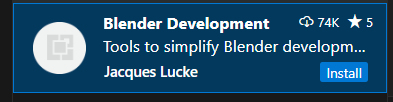
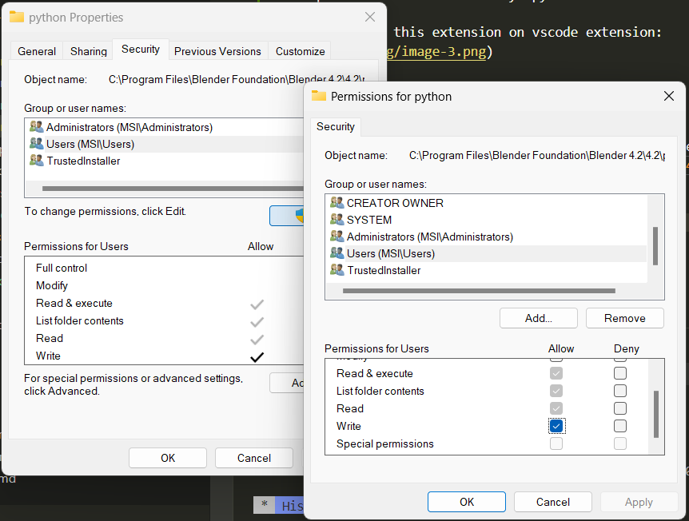

Blender Scripting
Useful tricks
align objects in a Grid of interval

say if you have total object 24, to be arranged in 4 rows

BLENDER SETUP
Making blender work on Vscode
For Vscode to be able to read blender codes
this provides all the necessary bpy module-like
-
Then install this extension on vscode extension: 
-
CTRL + SH + P - blender : start incase you run into an error, do the follow
goto your directory where blender python is installed:
C:\Program Files\Blender Foundation\Blender 4.2\4.2\python
- R+CLK - properties > security
- Under (group or user) scrolled down to User and click Edit button
- check the option to write then ok it

Getting Started with blender Addons
minimum file structure
BASIC & GENERIC SCRIPTS
The first thing to understand is that everything created in the view port is an object.
The first goto is the bpy.context this gives you access to the current selection objects.
Accessing active object
To access a select single object use bpy.context.object or bpy.context.active_object
Accessing all selected objects
for multiple selected objects use bpy.context.selected_objects
it returns a list of select objects
Making an object active programmatically
Access DATA-BLOCK of active element
The bpy.context.object.data depending on what you select, it gives you access to the data-block item of such selection
>>> bpy.context.object.data #bpy.data.meshes['Cube.001']
>>> bpy.context.object.data #bpy.data.armatures['Armature']
>>> bpy.context.object.data #bpy.data.meshes['sq_00']
>>> bpy.context.object.data #bpy.data.lattices['Lattice']
Check type of object
Switch between modes
you can switch between OBJECT, EDIT and other modes.
base on the object e.g for bone you have POSE and for Meshes you have VERTEX_MODE and more. You can check it by hovering over the mode

Listing all Active objects (DATA)
for n in bpy.data.objects:
n.name, n.type, n.__class__.__name__
'''
('Camera', 'CAMERA', 'Object')
('Cylinder', 'MESH', 'Object')
('Icosphere', 'MESH', 'Object')
('Light', 'LIGHT', 'Object')
'''
Select all Active objects (OPS)
here item can take any of the following values:
# item param: [‘MESH’, ‘CURVE’, ‘SURFACE’, ‘META’, ‘FONT’, ‘HAIR’, ‘POINTCLOUD’, ‘VOLUME’,
# ‘GPENCIL’, ‘ARMATURE’, ‘LATTICE’, ‘EMPTY’, ‘LIGHT’, ‘LIGHT_PROBE’, ‘CAMERA’, ‘SPEAKER’]
bpy.ops.object.select_by_type(type=item)
Remove Objects' Meshs(DATA)
Remove all Active select (OPS)
# bpy.ops.object.select_all() # 'SELECT' is default
bpy.ops.object.select_all(action='SELECT') #
bpy.ops.object.delete()
Listing all Active Material nodes
for n in bpy.data.materials[1].node_tree.nodes:
n.name, n.type, n.__class__.__name__
'''
('Principled BSDF', 'BSDF_PRINCIPLED', 'ShaderNodeBsdfPrincipled')
('Material Output', 'OUTPUT_MATERIAL', 'ShaderNodeOutputMaterial')
'''
Delete active object(s)
bpy.ops.object.delete()
# {'FINISHED'}
```
## DRIVERS SCRIPTS
### Creating basic driver
Creating new driver on selected object property.
This returns the FCurve of the newly created driver
```py
'''Drivers for x, y, z location'''
bpy.data.objects[0].driver_add('location')
# [bpy.data.objects['Cube']...FCurve,
# bpy.data.objects['Cube']...FCurve,
# bpy.data.objects['Cube']...FCurve]
'''Driver for y location only'''
>>> bpy.data.objects[0].driver_add('location', 1)
# bpy.data.objects['Cube']...FCurve
'''Driver for y - euler rotation only'''
### bpy.context.object
>>> bpy.data.objects[0].driver_add('rotation_euler', 1)
# bpy.data.objects['Cube']...FCurve
Simple driver demonstration
import bpy
#def custom_driver(v):
# return v * 0.1
#bpy.app.driver_namespace['my_cus_drv'] = custom_driver
drv_z_rot_Fcurve = bpy.data.objects["Cube"].driver_add("location", 2)
# Driver section:
drv_z_rot = drv_z_rot_Fcurve.driver
var1_name = "var"
# DriverVariable section:
drv_z_rot.variables.new()
drv_z_rot.variables[0].name = var1_name
drv_z_rot.expression = f"{var1_name}*0.2"
drv_z_rot
#DriverTarget section:
# Types SINGE_PROP, ROTATION_DIFF, LOC_DIFF and CONTEXT_PROP
drv_z_rot.variables[var1_name].type = 'TRANSFORMS'
drv_z_rot.variables[var1_name].targets[0].id = bpy.data.objects["Empty"]
drv_z_rot.variables[var1_name].targets[0].transform_type ="ROT_Z"

Driver to move the materials offset
# Add driver to the material
img_offset_Fcurve = img1.active_material.node_tree.nodes["Image Texture"].\
image_user.driver_add("frame_offset")
img_drv = img_offset_Fcurve.driver
var1 = "img_var"
img_drv.expression = f"abs({var1}*10)"
img_drv.variables.new()
img_drv.variables[0].name = var1
img_drv.variables[var1].type = 'SINGLE_PROP'
# ABS PATH: bpy.data.objects["arm2_obj"].pose.bones["Bone1"].location[1]
img_drv.variables[var1].targets[0].id = arm1 # bpy.data.objects["arm2_obj"]
img_drv.variables[var1].targets[0].data_path = "pose.bones[0].location[1]"

MATERIAL RELATED SCRIPT
# CREATE a new material
mat1 = bpy.data.materials.new (name = "MatBasic")
# ACCESS individual material id or by name
bpy.data.materials[0]
bpy.data.materials["MAT_01"]
# CREATE a ndoe type using
mat1.node_tree.nodes.new(type="ShaderNodeBsdfDiffuse")
# ACCESS material nodes by index or by name
mat1.node_tree.nodes[0] # "Material Output"
mat1.node_tree.nodes["Diffuse BSDF.001"]
Get the active material of object
Create a Simple Icosphere Principled BDSF applied
import random
def createNewMaterial():
# create a new material
mat = bpy.data.materials.new(name = "MatA")
# enable the created material
mat.use_nodes = True
# mat1.node_tree.nodes.new(type="ShaderNodeBsdfDiffuse")
prinBSDF = mat.node_tree.nodes['Principled BSDF']
# Set the color of the material
prinBSDF.inputs["Base Color"].default_value = (0.1, 0.2, 0.3, 1)
# set the roughness
prinBSDF.inputs["Roughness"].default_value = 0.3
# set the metallic
prinBSDF.inputs["Metallic"].default_value = random.uniform(0.1, 1.0)
return mat
''' Creating an Icosphere and apply material '''
def createIcoSphere():
# create an icosphere and shade smooth it
bpy.ops.mesh.primitive_ico_sphere_add(subdivisions=3)
bpy.ops.object.shade_smooth()
# Get the active object i.e icosphere
active_object = bpy.context.active_object
# Add the material to the object material list
ico_mat = createNewMaterial()
active_object.data.materials.append(ico_mat)
createIcoSphere()
RIG RELATED
Accessing the PoseBone and EditBones of a rig
Accessing the Edit bones
bpy.context.object.data.edit_bones # edit bones list
bpy.context.object.data.edit_bones[0]
# >>> bpy.data.armatures['arm2']...EditBone
bpy.context.object.data.edit_bones[0].name
# >>> 'Bone1'
bpy.context.object.data.edit_bones[0].tail
# Vector((0.0, 0.0, 0.3))
bpy.context.object.data.edit_bones[0].head
# Vector((0.0, 0.0, 0.0))
Accessing the Pose Bones
bpy.context.object.pose.bones
# >>> bpy.data.objects['arm2_obj'].pose.bones
bpy.context.object.pose.bones[0] # access first in dict
## >>> bpy.data.objects['arm2_obj'].pose.bones["Bone1"]
remove/delete all amarture in bpy.data.armartures
Getting location of rig or object
bpy.context.active_object # >>> bpy.data.objects['arm2_obj']
bpy.context.active_object.location # >>> Vector((0.0, 0.5, 0.0))
bpy.context.active_object.location[1] = .5
Create an bone in a new Armature bone
You can create a new armature object with bpy.ops
bpy.ops.object.armature_add(enter_editmode=False, align='WORLD',
location=(0, 0, 0), scale=(1, 1, 1))
then get the newly created armature object and data consequently
bpy.context.active_object # bpy.data.objects['arm2_obj']
bpy.context.active_object.data # bpy.data.armatures['arm2']
But better still is to use the bpy.data instead of bpy.ops
import bpy, mathutils
def create_bone(name, head_pos, tail_pos):
arm_name = "arm2"
# Create object and Data for the armature
arm_data = bpy.data.armatures.new(arm_name)
arm_obj = bpy.data.objects.new(f"{arm_name}_obj", arm_data)
# add it to collection and make active in view layer
bpy.context.collection.objects.link(arm_obj)
bpy.context.view_layer.objects.active = arm_obj
# Enter the edit mode
bpy.ops.object.mode_set(mode='EDIT')
new_bone = arm_data.edit_bones.new(name)
vec = mathutils.Vector(head_pos)
new_bone.head = vec
new_bone.tail = vec + mathutils.Vector(tail_pos) # example of how to set tail
# go back to object mode
bpy.ops.object.mode_set(mode='OBJECT')
return new_bone
create_bone("Bone1", (0,0,0), (0, 0.5, 1))

Adding constrainst to a bone
Make sure you are in the pose mode
bpy.context.object.pose.bones[0].constraints.new(type="LIMIT_LOCATION")
# Result: bpy.data.objects['arm2_obj'].pose.bones["Bone1"].constraints["Limit Location"]
cons_name = "Lim_Loc_Bone1" # constraint_name
arm1.pose.bones[0].constraints.new(type="LIMIT_LOCATION")
arm1.pose.bones["Bone1"].constraints[0].name = cons_name
arm1.pose.bones["Bone1"].constraints[cons_name].use_min_y = True
arm1.pose.bones["Bone1"].constraints[cons_name].min_y = -0.5
arm1.pose.bones["Bone1"].constraints[cons_name].use_max_y = True
arm1.pose.bones["Bone1"].constraints[cons_name].max_y = 0.5
arm1.pose.bones["Bone1"].constraints[cons_name].owner_space = 'LOCAL'
arm1.pose.bones["Bone1"].constraints[cons_name].use_transform_limit = True
HELPER FUNCTIONS
Helper function : DelectAll item
This function will Select and delete all item specified as item
if not specified, all selected objects in the scene will be deleted.
'''
Function to Select and delete all selected item specified
if not specified, delete all selected
item can be:
['MESH', 'CURVE', 'SURFACE', 'META', 'FONT', 'HAIR', 'POINTCLOUD', 'VOLUME', 'GPENCIL', 'ARMATURE', 'LATTICE', 'EMPTY', 'LIGHT', 'LIGHT_PROBE', 'CAMERA', 'SPEAKER']
'''
def deleteAll(item = None):
if (item == None):
# select all objects
bpy.ops.object.select_all(action='SELECT')
else:
# select all by item type
bpy.ops.object.select_all(action='DESELECT')
bpy.ops.object.select_by_type(type=item)
# delete all selected
bpy.ops.object.delete()
# Delete unused materials
bpy.ops.outliner.orphans_purge(do_local_ids=True, do_linked_ids=True, do_recursive=True)
Adding and Removing material from object
# cube = bpy.context.active_object
cube.data.materials.append(ico_mat) # Adding material to object
cube.data.materials.pop(index=0) # Removing material at index
cube.active_material_index #get/set index material
BLENDER SCRIPT REFERENCE
Node internals
NodeInternal(Node) base classes — bpy_struct, Node
subclasses — CompositorNode, FunctionNode, GeometryNode, NodeFrame, NodeGroup, NodeGroupInput, NodeGroupOutput,NodeReroute, ShaderNode, TextureNode
https://docs.blender.org/api/current/bpy.types.NodeInternal.html#bpy.types.NodeInternal
Creating a new Node Frame
frame = mat1.node_tree.nodes.new(type="NodeFrame") # New Node frame
glass = mat1.node_tree.nodes.new(type='ShaderNodeBsdfGlass')
trans = mat1.node_tree.nodes.new(type='ShaderNodeBsdfTransparent')
# Adding the node Frame to Nodes
glass.parent = frame
trans.parent = frame
# Slightly different for node group
group = mat1.node_tree.nodes.new(type='ShaderNodeGroup')
group.node_tree = bpy.data.node_groups.new("A Group", "ShaderNodeTree") # New Node
group.node_tree = bpy.data.node_groups["NodeGroup"] # already existing
list of shader Nodes
https://docs.blender.org/api/current/bpy.types.ShaderNode.html
Creating a Node Group(globally)
bpy.data.node_groups.new("A Group", "ShaderNodeTree")
# bpy.data.node_groups['A Group']
D.node_groups.new(name = "A Group", type ="ShaderNodeTree")
# bpy.data.node_groups['A Group.001']
Group Node Sample
import bpy
# create a group
test_group = bpy.data.node_groups.new(name='testGroup', type='ShaderNodeTree')
# create group inputs
group_inputs = test_group.nodes.new('NodeGroupInput')
group_inputs.location = (-350,0)
test_group.inputs.new('NodeSocketFloat','in_to_greater')
test_group.inputs.new('NodeSocketFloat','in_to_less')
# create group outputs
group_outputs = test_group.nodes.new('NodeGroupOutput')
group_outputs.location = (300,0)
test_group.outputs.new('NodeSocketFloat','out_result')
# create three math nodes in a group
node_add = test_group.nodes.new('ShaderNodeMath')
node_add.operation = 'ADD'
node_add.location = (100,0)
node_greater = test_group.nodes.new('ShaderNodeMath')
node_greater.operation = 'GREATER_THAN'
node_greater.label = 'greater'
node_greater.location = (-100,100)
node_less = test_group.nodes.new('ShaderNodeMath')
node_less.operation = 'LESS_THAN'
node_less.label = 'less'
node_less.location = (-100,-100)
# link nodes together
test_group.links.new(node_add.inputs[0], node_greater.outputs[0])
test_group.links.new(node_add.inputs[1], node_less.outputs[0])
# link inputs
test_group.links.new(group_inputs.outputs['in_to_greater'], node_greater.inputs[0])
test_group.links.new(group_inputs.outputs['in_to_less'], node_less.inputs[0])
#link output
test_group.links.new(node_add.outputs[0], group_outputs.inputs['out_result'])
OPERATOR CLASS, UI OPERATORS, VIEW CLASS
Most Basic Class Operator
import bpy
from bpy.types import Operator
class MySimpleOp (Operator):
bl_idname = "mesh.sphery"
bl_label = "Sphere Create"
def execute(self, context):
# Add a sphere
bpy.ops.mesh.primitive_uv_sphere_add()
return{'FINISHED'}
def register():
bpy.utils.register_class(MySimpleOp)
def unregister():
bpy.utils.unregister_class(MySimpleOp)
if __name__ == "__main__":
register()
Another Operator Class Example
import bpy
from bpy.types import Operator
from bpy.props import (
IntProperty,
FloatProperty
)
class MESH_OT_cubeGrid(Operator):
""" Here is some cube grid """
bl_idname = "mesh.cube_grid"
bl_label = "Cube Grid"
bl_options = {'REGISTER','UNDO'}
countX: IntProperty( name = 'X',
description = 'Number of cube in X direction',
default = 4, min=1, max=20
)
countY: IntProperty( name="Y",
description="Number of cube in Y direction",
default = 3, min=1, max=10
)
size: FloatProperty(name="Size",
description = "Size of the the cube",
default = 0.2, min=0.1, max=1
)
# Only show in properties editor.
@classmethod
def poll(cls, context):
return context.area.type != 'VIEW_3D'
def execute(self, context):
for idx in range(self.countX * self.countY):
x = idx % self.countX
y = idx // self.countX
bpy.ops.mesh.primitive_cube_add(size=self.size, \
location=(x*0.2, y*0.2, 0),scale=(1,1, \
(x*x-1)*0.1))
print("----I AM THE CUBE GRID----")
return {'FINISHED'}
# def invoke(self, context):
# pass
# def model(self, context, event):
# pass
def register():
bpy.utils.register_class(MESH_OT_cubeGrid)
def unregister():
bpy.utils.unregister_class(MESH_OT_cubeGrid)
if __name__ == "__main__":
register()
UI View/Operator Class Example
import bpy
from bpy.types import Panel, Operator
import mathutils, math
class VIEW3D_PT_Spery(Panel):
bl_space_type = "VIEW_3D" # Where in the UI it will show up. context.area.type
bl_region_type = 'UI' # region is UI header or footer
bl_category = "Spery" # name of the TAB for the panel
bl_label = "Sphery Sphere" # Name of the label in the UI
def draw(self, context):
self.layout.operator('mesh.sphery')
col = self.layout.column()
col.operator('armature.create_bone', text="Create bone")
class MEST_OT_MySimpleOp (Operator):
bl_idname = "mesh.sphery"
bl_label = "Sphere Create"
@classmethod
def poll(cls, context):
# print(f"My context area is : {context.area.type}")
# return True
# Only show in View 3D Area.
return context.area.type == 'VIEW_3D'
def execute(self, context):
bpy.ops.mesh.primitive_uv_sphere_add()
return{'FINISHED'}
class ARMATURE_OT_cb(Operator):
"Create bone in edit mode at specific location "
bl_idname = "armature.create_bone"
bl_label= "New Bone from code"
def execute(self, context):
bpy.ops.object.add(type='ARMATURE', enter_editmode=True, location=(0,0,0))
self.create_bone(context, "Bone1", (0,0,0), (0, 0.5, 1))
return{'FINISHED'}
def create_bone(self, ctx, name, head_pos, tail_pos):
arm = ctx.object.data
b1 = arm.edit_bones.new(name)
vec = mathutils.Vector(head_pos)
b1.head = vec
b1.tail = vec + mathutils.Vector(tail_pos) # example of how to set tail relative to head
def register():
bpy.utils.register_class(MEST_OT_MySimpleOp)
bpy.utils.register_class(VIEW3D_PT_Spery)
bpy.utils.register_class(ARMATURE_OT_cb)
if __name__ == "__main__":
register()

PopUp Operator class
import bpy
def draw_popup(self, context):
col = self.layout.column()
row = col.row()
row.label(text = "Hello World")
row = col.row()
row.prop(context.scene.render, 'resolution_x')
class ShowPopupOperator(bpy.types.Operator):
bl_idname = "object.show_popup"
bl_label = "sample show popup"
def invoke(self, context, event):
context.window_manager.popup_menu(draw_popup, title='Test this', icon='INFO')
return {'FINISHED'}
def register():
bpy.utils.register_class(ShowPopupOperator)
if __name__ == '__main__':
register()


Operator for opening files
import bpy
import os
from bpy.props import StringProperty, BoolProperty
from bpy_extras.io_utils import ImportHelper
from bpy.types import Operator
class VIEW_OT_TestOpenFileBrowser(Operator, ImportHelper):
bl_idname = "image.open_filebrowser"
bl_label="Open the file browser"
# Filter the type of selected file
filter_glob : StringProperty( default="*.jpg; *jpeg;*.png; *.tif, *.tiff",
options={'HIDDEN'})
# Add properties to the file browser window menu
test_boolean: BoolProperty(name="Check to test",
description="The description to check the something",
default=True)
def execute(self, context):
"Do something with selected file"
filename, extension = os.path.splitext(self.filepath)
print('Selected file = ', self.filepath)
print('File name = ', filename)
print('File Extension = ', extension)
return {'FINISHED'}
def register():
bpy.utils.register_class(VIEW_OT_TestOpenFileBrowser)
def unregister():
bpy.utils.unregister_class(VIEW_OT_TestOpenFileBrowser)
if __name__ == "__main__":
register()
Go to your view 3d press F3 and type the name in the bl_idname
in our case image.open_filebrowser
You will have

You will get a file browser file like so:

Operator Opening Files #2
class VIEW_OT_2D_Facial_Rig(Operator, ImportHelper):
bl_idname = "mesh.load_2d_facial_rig_image"
bl_label="Load the 2d Rig"
# ----------------------
# File dialog properties
files: CollectionProperty(type=bpy.types.OperatorFileListElement, options={'HIDDEN', 'SKIP_SAVE'}, ) # type: ignore
directory: StringProperty(subtype='FILE_PATH', options={'SKIP_SAVE', 'HIDDEN'}) # type: ignore
filter_image: BoolProperty(default=True, options={'HIDDEN', 'SKIP_SAVE'})
filter_movie: BoolProperty(default=True, options={'HIDDEN', 'SKIP_SAVE'})
filter_folder: BoolProperty(default=True, options={'HIDDEN', 'SKIP_SAVE'})
filter_glob : StringProperty( default="*.jpg; *jpeg;*.png; *.tif, *.tiff",
options={'HIDDEN'}) # type: ignore
def execute(self, context):
"List all the 'png' files in the selected directory"
self.file_list = [os.path.join(self.directory, file) for file in os.listdir(self.directory) if file.endswith(".png")]
print(self.file_list)
print("<=== List File Content ===>")
print(list(find_image_sequences(self.file_list)))
print("<====================>")
return {'FINISHED'}
def register():
bpy.utils.register_class(VIEW_OT_2D_Facial_Rig)
def unregister():
bpy.utils.unregister_class(VIEW_OT_2D_Facial_Rig)
if __name__ == "__main__":
register()
IMPORT TEXTURE IMAGE AS RIG WORKFLOW
1. Custom image as plane
This is a slightly modified to allow our workflow
import bpy
def custom_img_as_plane(image_name, image_dir):
# Import image as mesh plane operator
bpy.ops.image.import_as_mesh_planes( directory=image_dir,
filepath=f"{image_dir}{image_name}",
files=[{"name":image_name, "name":image_name}],
image_sequence=True,relative=False,align_axis='+X')
# Change material Image Texture node to work for animation seq.
bpy.data.images[image_name].source = 'SEQUENCE'
image_name_only = image_name.split('.')[0] # split e.g "seq-01.jpg" into ['seq-01', 'jpg']
bpy.data.materials[image_name_only].node_tree.nodes["Image Texture"].image_user.frame_offset = 1
files_data = {
"sq_00.jpg" : "C:/Projects/Blender/_SandBox/seq1/",
"eye_01.png" : "C:/Projects/Blender/_SandBox/eye_imgs/"
}
for k, v in files_data.items():
print(k, v)
custom_img_as_plane(k, v)